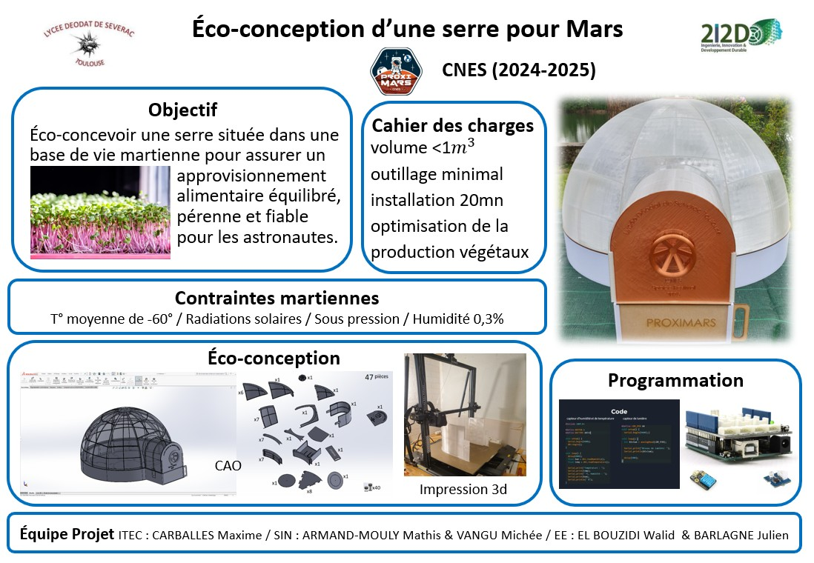
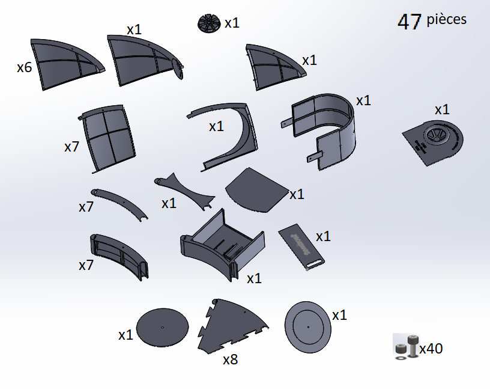
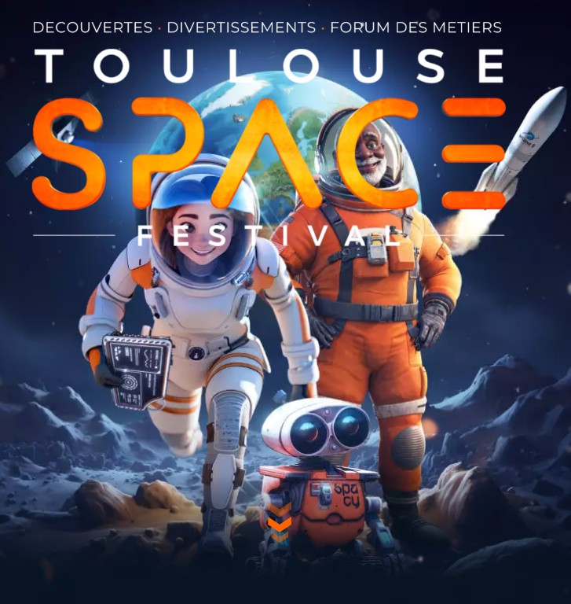

Présentation du Projet
Ce projet, soutenu par le CNES, le CNRS et Planète Sciences, vise à éco-concevoir une serre située dans une base de vie martienne. L'enjeu est crucial : assurer un approvisionnement alimentaire équilibré, pérenne et fiable pour les astronautes en mission longue durée.

Cahier des Charges & CAO
Mes choix de conception ont été guidés par les contraintes du cahier des charges : un volume inférieur à 1m³ (prototype échelle 1/10), un outillage minimal, structure légère et une installation rapide (moins de 20 minutes).
- Modélisation complète sur SolidWorks.
- Assemblage complexe de 47 pièces techniques.
- Structure en dôme géodésique optimisant le rapport volume/résistance.

Impression 3D & Assemblage
Le prototype a été réalisé en grande partie par impression 3D (seuls les joints entre les parois et le dôme ont été réalisés en bois par découpe laser). La structure autoporteuse permet à une seule personne de réaliser l'assemblage dans le temps imparti.
- Impression des pièces en PETG.
- Assemblage rigide et robuste (tenons, vis et écrous).
- Intégration des systèmes de programmation (Arduino) pour la gestion des végétaux.
De la CAO à l'assemblage
Toulouse Space Festival
Le projet a abouti à une journée de présentation officielle lors du Toulouse Space Festival au Parc des Expositions le 16 mai 2025.
